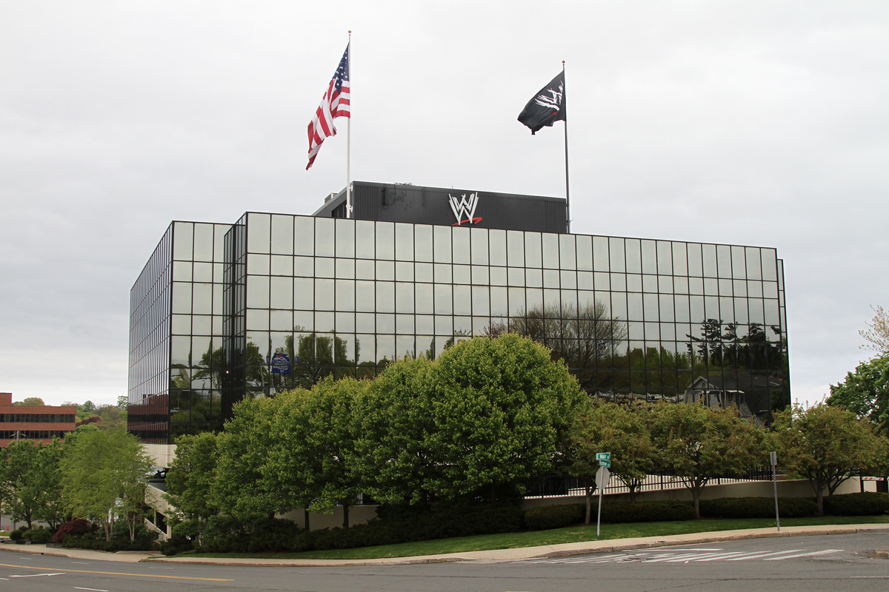
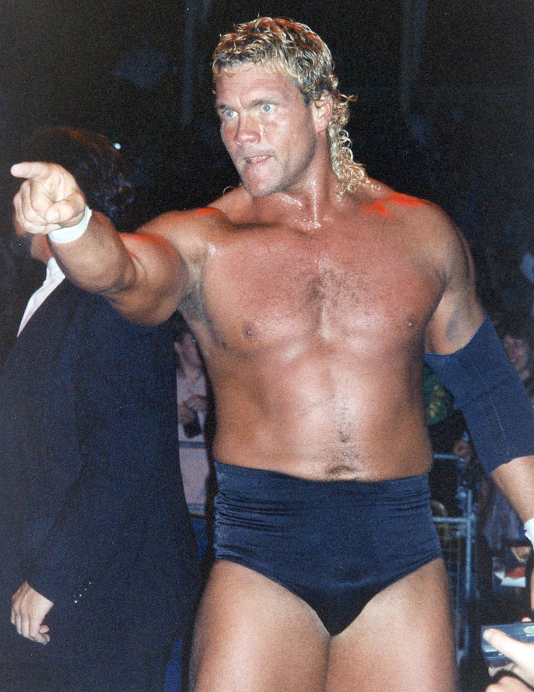
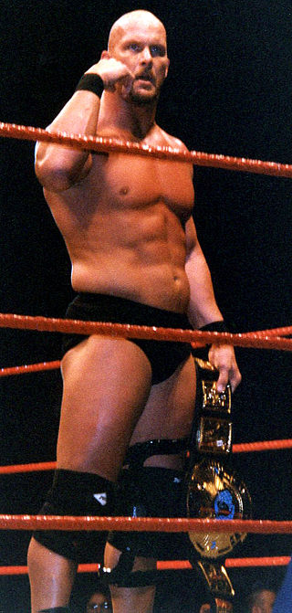

World Wrestling Entertainment
World Wrestling Entertainment, Inc., doing business as WWE, is an American integrated media and entertainment company.
and WWE refers to the professional wrestling promotion itself,founded by Jess McMahon and Toots Mondt in the year 1952 .
as Capitol Wrestling Corporation Ltd. As of 2018

New Generation (1993–1997)
The WWF was hit with allegations of steroid abuse and distribution in 1992. The New Generation", featuring Shawn Michaels, Diesel, Razor Ramon, Bret Hart, and The Undertaker, in an effort to promote new talent into the spotlight.
The Attitude Era (1997–2002)
Prior to the Montreal Screwjob, which took place at the 1997 Survivor Series, former WCW talent were being hired by the WWF, including Stone Cold Steve Austin, Mankind, and Austin was slowly brought in as the new face of the company despite being promoted as an antihero, starting with his "Austin 3:16" speech shortly after defeating Jake Roberts in the tournament finals at the King of the Ring pay-per-view in 1996
 The return of ECW:2005-2006
On May 26, 2006, WWE officially announced the relaunch of the franchise with its own show on NBC Universal's Sci Fi Channel,
later to be known as Syfy, starting June 13, 2006. Despite initial concerns that professional wrestling would not be accepted bySciFi
Channel's demographicn etwork President Bonnie Hammer stated that she believed ECW would fit the channel's theme of stretching
the imagination
Death of Owen Hart
On May 23, 1999, Owen Hart fell to his death in Kansas City, Missouri during the Over the Edge pay-per-view event.
Hart was in the process of being lowered via harness and grapple line into the ring from the rafters of Kemper Arena
Intercontinental Championship match against The Godfather.In keeping with his Blue Blazer new buffoonish super character,
he was to begin a dramatic entrance, being lowered to just above ring level, at which time he would act "entangled",
then release himself from the safety harness and fall flat on his face for comedic effect
WWE Network
In September 2011, WWE officially announced plans to launch the WWE Network in time for WrestleMania XXVIII.
WWE's official website featured a countdown clock that would have expired on April 1, 2012 however, the clock
was quietly removed, and the network did not launch as advertised.